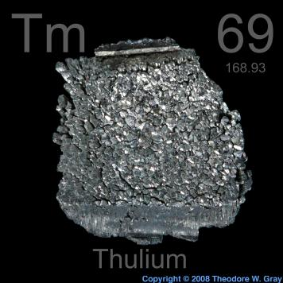

HOME
PREVIOUS
NEXT

Thulium
Atomic Weight: 168.93422
Density: 9.32 g/cm3
Melting Point: 1545 °C
Boiling Point: 1950 °C
Thulium is among the most obscure elements in the periodic table. It has very few applications. Some people consider it the most useless of all naturally occurring elements, though others will rush to its defense.